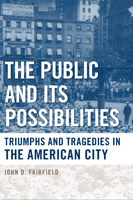

<body bgcolor="#FFFFFF" text="#000000" link="#0000FF" vlink="#CC0000" alink="#CC0000"><center><hr width="350" size="1" align="center" noshade>Throughout U.S. history, our unrealized civic aspirations provide the essential counterpoint to an excessive focus on private interests<hr width="350" size="1" align="center" noshade><p><a href="https://cdcshoppingcart.uchicago.edu/Cart/ChicagoBook.aspx?ISBN=9781439902103&&PRESS=temple" target="_top">Buy this book!</a> | <a href="https://cdcshoppingcart.uchicago.edu/Cart/Cart.aspx?PRESS=temple" target="_top">View Cart</a> | <a href="https://cdcshoppingcart.uchicago.edu/Cart/Cart.aspx?PRESS=temple" target="_top">Check Out</a></p><p></p></center><!--none//--><h1>The Public and Its Possibilities</h1>
<H2>Triumphs and Tragedies in the American City</H2>
<h3>John D. Fairfield</h3>
<P>cloth 1-4399-0210-0 $75.50, Mar 10, <FONT COLOR=#990033>Available</FONT>
<br>paper 1-4399-0211-9 $27.95, <FONT COLOR=#990033>Available</FONT>
<br>Electronic Book 1-4399-0212-7 $27.95 <FONT COLOR=#990033>Available</FONT>
<BR> 368 pp
6x9
</P><BLOCKQUOTE><I><p>&quot;<em>A sustained argument about the repeated and resilient assertion of public democracy in American cities, and the forces that inhibited and subverted its full expression.</em>&quot;&mdash;<b>Mary Ryan</b>, John Martin Vincent Professor of History, Johns Hopkins University</p></I></BLOCKQUOTE>
<p>In his compelling reinterpretation of American history, <em>The Public and Its Possibilities</em>, John Fairfield argues that our unrealized civic aspirations provide the essential counterpoint to an excessive focus on private interests. Inspired by the revolutionary generation, nineteenth-century Americans struggled to build an economy and a culture to complement their republican institutions. But over the course of the twentieth century, a corporate economy and consumer culture undercut civic values, conflating consumer and citizen.
</p><p>
Fairfield places the city at the center of American experience, describing how a resilient demand for an urban participatory democracy has bumped up against the fog of war, the allure of the marketplace, and persistent prejudices of race, class, and gender. In chronicling and synthesizing centuries of U.S. history&mdash;including the struggles of the antislavery, labor, women’s rights movements&mdash;Fairfield explores the ebb and flow of civic participation, activism, and democracy. He revisits what the public has done for civic activism, and the possibility of taking a greater role.
</p><p>
In this age where there has been a move towards greater participation in America's public life from its citizens, Fairfield’s book&mdash;written in an accessible, jargon-free style and addressed to general readers&mdash;is especially topical.
</p>
<BR>&nbsp;<h2>Excerpt</h2><P>Excerpt available at <a href="http://www.temple.edu/tempress">www.temple.edu/tempress</a></p>
<BR>&nbsp;<h2>Reviews</h2>
<p><I>"As long ago as the 1920s Frederick Jackson Turner suggested an urban interpretation of American history; John Fairfield takes up that challenge. A hope long since abandoned to monographic specialization in the field has been happily realized in the powerful work of synthesis crafted by John Fairfield. </i>The Public and Its Possibilities<i> is a smart, imaginatively conceived and researched, well written, and passionately told history of the challenges and possibilities of a lively urban democratic public."</I><br>&#151<b>Thomas Bender</b>, New York University
<p><I>"A work of historical synthesis and political criticism, John Fairfield’s book is a powerful reminder of the indispensable role of American cities in fostering a more expansive civic culture. Fairfield writes in the tradition of Lewis Mumford, Paul and Percival Goodman, and Jane Jacobs—alert to the ever-changing landscape of streets and plazas, public institutions, and informal associations that have enabled city residents of different backgrounds to imagine themselves as citizens and act accordingly. And like those urbanist critics, Fairfield is acutely aware that the market fundamentalism that has devastated many American cities has had equally devastating consequences for our capacity for democratic self-government. His concluding call for a new ‘ecology of the city’ could not be more timely."</I><br>&#151<b>Casey Nelson Blake</b>, Columbia University
<p><i>"One of the many overarching themes Fairfield addresses, the one that most effectively conveys the evolution of the US city is civic activism. The author connects this theme to virtually every other historical topic, such as women's rights, labor, economics, and ultimately, urban ecology, in a most convincing manner. Although this is a scholarly work, general readers will find the prose accessible and stimulating. Summing Up: Recommended." </i><br>&#151<b><i>CHOICE</b></i>
<p><i>"John Fairfield is concerned about the health of the American body politic and the state of our national conversation.... [His] book opens up this conversation. We have a lot to talk about." </i><br>&#151<b><i>The Cutting Edge</b></i>
<p><i>"Fairfield's writing is excellent throughout. He has somehow managed to condense entire book-shelves of work into seamless, quote-rich prose. ... The city comes into true focus only in his superb last chapter, which pegs twentieth century civic decline to the relative post-WWII fortunes of cities and suburbs. Fairfield's chronicle of post-war urban decay is the best short summary I have seen." </i><br>&#151<b><i>Contemporary Sociology</b></i>
<p><i>"John Fairfield offers a passionate reading of American political history that tries to reinvigorate democratic traditions in the face of neoliberal capitalism....It is thickly argued, deeply embedded in 40 years of historical scholarship, and filled with references to people, organizations, and events.... [He] has provided a valuable book that will stimulate and inspire its readers—perhaps to argument and hopefully to action."</i> <br>&#151<b><i>The Journal of Urban Affairs</b></i>
<p><i>"The book narrates a rise and fall of public democracy.... The last section...offers Fairfield’s argument at its strongest, demonstrating the massive resource mobilization that solidified the postwar transformation of America — from highway construction and suburban mortgage subsidies to industrial decentralization, the rise of 'homeowner populism and the fragmentation of metropolitan government,' and urban dispossession through 'redevelopment and renewal.'"</i><br>&#151<b><i>The Journal of American History</b></i>
<p><i> "</i>The Public and Its Possibilities<i> is a highly readable book that covers a great deal of ground and successfully delineates the resurgent efforts by various groups to reinvigorate American democracy. Its picture of the transformation of the Republican Party from defender of abolition to bulwark of propertied conservativism is perhaps its most compelling part....[T]his is a book well worth reading and assigning."</i><br>&#151<b><i>Perspectives on Politics</i></b>
<p><i>"An ambitious work of scholarly synthesis, </i>The Public and its Possibilities<i> braids together descriptions of socioeconomic trends, cultural conflicts and political philosophy from the late colonial era to the present... Resting on vast historical scholarship, </i>The Public and its Possibilities<i> would provide a useful interpretive spine for an undergraduate history course, comparable in some ways to Eric Foner’s </i>The Story of American Freedom<i>."</i><br>&#151<b><i>American Studies</i></b>
<p><i>"In </i>The Public and its Possibilities<i>, John D Fairfield synthesizes the work of a multitude of scholars to give a detailed overview of the trajectory of the public throughout American history. It is an impressive survey of American social, political and labour history as seen through the lens of a civic public created through deliberation and engaged with political questions.... </i>The Public and Its Possibilities<i> is a wonderful resource for understanding how a democratic public has been imagined, promoted and repressed throughout the history of the USA. It chronicles the centrality of the urban to the democratic public and makes a significant argument for the importance of cities to our social and political health."</i> <br>&#151<b><i>Urban Studies</b></i>
<p><i>"[A] sweeping account of democracy in urban America...Fairfield’s impressive synthesis brings together decades of secondary literature covering American urban and political history in a narrative that locates the city as the testing ground for more expansive definitions of citizenship and national belonging."</i> <br>&#151<b><i>Journal of Urban History</b></i>
<BR>&nbsp;<h2>Contents</h2><P>
<p>Preface: <i>The Public and Its Possibilities</i>
<br> Introduction: <i>Liberalism and the Civic Strand in the American Past</i>
<br><i>Civic Aspirations and Liberal Values</i>
<br><i>An Urban Thesis</i>
<p><b>Part I. Civic Aspirations and Market Development in a Long Age of Revolution</b>
<br><br>1.Democratizing the Republican Ideal of Citizenship: <i>Virtue, Interests, and the Citizen-Proprietor in the Revolutionary Era</i>
<br><i>Seaport Cities: Crucibles of Market and Public</i>
<br><i>The People Out of Doors and the Imperial Crisis</i>
<br><i>A More Democratic Public: Consumer Boycotts Politicize the Household</i>
<br><i>The Threat of Enslavement and the Need for Virtue: The Unifying Myth of the American Revolution</i>
<br><i>Virtue and Vice in an Overheated Market</i>
<br><i>Redeeming the Revolution: Virtues or Mechanisms?</i>
<br><i>Citizen-Proprietors and the Democratization of Competence</i>
<br><i>Revolutionary Legacies, Democratic Futures</i>
<br><br>2. Creating Citizens in a Commercial Republic: <i>Market 33 Transformation and the Free Labor Ideal, 1812–1873</i>
<br><i>The Origins of the Free Labor Ideal</i>
<br><i>The Market Revolution and the Public Purpose</i>
<br><i>Labor Politics in the Jacksonian City: Unjust Government and a Conspiracy to Enslave</i>
<br><i>A Crippled Democracy: Jacksonian Fears and Whig Paternalism</i>
<br><i>The Free Labor Ideology and the Transformation of Northern Whiggery</i>
<br><i>Positive Liberty: Turning Slaves into Citizens</i>
<br><i>The Limits of Radical Republicanism</i>
<br><br>3. The Short, Strange Career of Laissez-Faire: <i>Liberal Reformers and Genteel Culture in the Gilded Age</i>
<br><i>Big Business and Small Politics in the Gilded Age</i>
<br><i>Liberal Reformers and Genteel Culture</i>
<br><i>The Liberal Reformers’ Encounter with the City</i>
<br><i>Civic Murder: Liberal Reformers and Public Opinion</i>
<br><i>“This Word Culture”: An Industrial Tragedy at Pullman</i>
<p><b>Part II. Popular Culture, Political Culture: Building a Democratic Public</b>
<br><br>4. The Democratic Public in City and Nation: <i>The Jacksonian City and the Limits of Antislavery</i>
<br><i>Constructing a Public Realm</i>
<br><i>In the Streets: Law and the Public Realm</i>
<br><i>To the Park: The Strengths and Weaknesses of the Jacksonian Public</i>
<br><i>Popular Culture, Political Culture</i>
<br><i>Young America and Democratic Culture</i>
<br><i>The Republic of the Streets and Fields</i>
<br><i>The Astor Place Riot</i>
<br><i>Fatal Flaw: Young America and Negrophobia</i>
<br><i>Cultural Laissez-Faire versus the Evangelical United Front</i>
<br><i>Antislavery: Passion and Rationality in the Antebellum Public</i>
<br><i>Lincoln’s Rhetorical Revolution</i>
<br><br>5. The Democratic Public Discredited: <i>The New York City Draft Riots and Urban Reconstruction, 1850–1872</i>
<br><i>“The Most Radical City in America”</i>
<br><i>Nativism and the Erosion of Municipal Autonomy</i>
<br><i>The New York City Draft Riots</i>
<br><i>Draconian Justice: Reconstructing New York City</i>
<br><i>The Spectacular Rise and Precipitous Fall of Boss Tweed</i>
<br><i>Postwar Republicanism: Labor Revolt and Metropolitan Capital</i>
<br><i>Retrenchment and Reform</i>
<br><br>6. Cultural Hierarchy and Good Government: <i>The Democratic Public in Eclipse</i>
<br><i>Highbrow/Lowbrow and an Incompetent Citizenry</i>
<br><i>Don’t Get Out the Vote</i>
<br><i>Municipal Counterrevolution: Dillon’s Rule and the Benevolent Expert</i>
<br><i>Domesticating the City</i>
<br><i>Civic Vertigo: The City Biological and Pathological</i>
<br><i>The Degeneration of Popular Politics</i>
<br><i>Mob Mind, Befuddled Public</i>
<p><b>Part III. The Public in Progressivism and War</b>
<br><br>7. The Republican Moment: <i>The Rediscovery of the Public in the Progressive Era</i>
<br><i>The City Beautiful and Intelligent</i>
<br><i>The Georgists and the City Republic</i>
<br><i>Democracy as Cooperative Inquiry: The Social Centers Movement</i>
<br><i>Mass Media and the Socialization of Intelligence</i>
<br><i>Nickel Madness or the Academy of the Working Man?</i>
<br><i>The National Board of Review of Motion Pictures and the Mutual Decision</i>
<br><i>The Rise of Hollywood and the Incorporation of Movie Culture</i>
<br><br>8. The Public Goes to War but Does Not Come Back: <i>Requiem for a Participatory Democracy</i>
<br><i>The War Intellectuals and The New Republic</i>
<br><i>The War for the American Mind</i>
<br><i>From Mastery to Drift</i>
<br><i>Trusting the Public Too Much or Too Little?</i>
<br><i>A Democrat on the Defensive</i>
<br><i>Participatory Democracy and Urban Culture: From Public Opinion to Public Relations</i>
<p><b>Part IV. A Democracy of Consumers</b>
<br><br>9. From Economic Democracy to Social Security: <i>The Labor Movement and the Rise of the Welfare/Warfare State</i>
<br><i>Industrial Democracy, Industrial Discipline</i>
<br><i>The Syndicalist Moment</i>
<br><i>From the New Freedom to the New Nationalism: War and the Triumph of the Corporate State</i>
<br><i>Labor’s War</i>
<br><i>From Welfare Capitalism to Moral Capitalism</i>
<br><i>Democratic Unions, Labor Party</i>
<br><i>The Second New Deal: Consumerist Democracy and the End of Antimonopoly</i>
<br><i>From New Deal to New War: Liberals and Labor Abandon Reform</i>
<br><i>Taming Labor in the Welfare/Warfare State</i>
<br><br>10. Constructing a Consumer Culture: <i>Redirecting Leisure from Civic Engagement to Insatiable Desire</i>
<br><i>The Popular Demand for Leisure and the Rise of the Saloon</i>
<br><i>The Leisure Question and Cheap Amusements</i>
<br><i>The Discovery of Play</i>
<br><i>Captains of Consciousness, Land of Desire</i>
<br><i>Exit the Saloon, Enter the Bijou</i>
<br><i>Shaping Character, Inculcating Values</i>
<br><i>The Incorporation of the Consumer Culture</i>
<br><i>Mass Culture, Mass Media, and the Consumerization of Politics</i>
<br><br>11. Private Vision, Public Resources: <i>Mass Suburbanization and the Decline of the City</i>
<br><i>New Deal Urban Policy and the Suburban-Industrial Complex</i>
<br><i>The Origins of the Urban Crisis I: Eroding the Tax and Employment Base</i>
<br><i>The Origins of the Urban Crisis II: Homeowner Pop u lism and the Fragmentation of Metropolitan Government</i>
<br><i>Central City Housing: The Racial Time Bomb</i>
<br><i>Dispossession: Urban Redevelopment and Urban Renewal</i>
<br><i>Confronting the Reverse Welfare State: From Civil Rights to Black Power</i>
<br><i>Two Societies, Separate and Unequal</i>
<br><i>Suburban Secession and Farewell to the Public Realm</i>
<br><br>Conclusion: The Future of the City: <i>Civic Renewal and Environmental Politics/i>
<br><i>The Great Unfinished Tasks of American Civilization</i>
<br><i>Private City, Public Crisis</i>
<br><i>Visions of Fear and Hope</i>
<br><i>Toward an Ecology of the City</i></i>
<p>Acknowledgments
<br>Notes
<br>Index
</P><BR>&nbsp;<H2>About the Author(s)</H2>
<table><tr><td valign="top"><img src="/tempress/authors/2072_au1.gif" height="90" width="75"></td><td width="100%" valign="middle"><p><b>John D. Fairfield</b> is Professor of History at Xavier University and the author of <em>The Mysteries of the Great City: The Politics of Urban Design, 1877-1937</em>.</P></td></tr></table>
<BR><H2>Subject Categories</H2>
<p><A HREF="/tempress/history.html" TARGET="_top">History</a>
<BR><A HREF="/tempress/urban.html" TARGET="_top">Urban Studies</a>
<BR><A HREF="/tempress/political.html" TARGET="_top">Political Science and Public Policy</a>
</p>
<BR><h2 class="inpageheading">In the series</H2>
<P><I><a href="http://www.temple.edu/tempress/urban_life.html" onMouseOver="window.status='Click for other books in this series!'; return true;" onMouseOut="window.status=''; return true;" target="_top">Urban Life, Landscape, and Policy</a></i>, edited by Zane L. Miller, David Stradling, and Larry Bennett.
</p><p><i>Urban Life, Landscape, and Policy Series</i>, edited by Zane L. Miller, David Stradling, and Larry Bennett, features books that examine past and contemporary cities, focusing on cultural and social issues. The editors seek proposals that analyze processes of urban change relevant to the future of cities and their metropolitan regions, and that examine urban and regional planning, environmental issues, and urban policy studies, thus contributing to ongoing debates.</p>
<p align="center"><a href="https://cdcshoppingcart.uchicago.edu/Cart/ChicagoBook.aspx?ISBN=9781439902103&&PRESS=temple" target="_top">Buy this book!</a> | <a href="https://cdcshoppingcart.uchicago.edu/Cart/Cart.aspx?PRESS=temple" target="_top">View Cart</a> | <a href="https://cdcshoppingcart.uchicago.edu/Cart/Cart.aspx?PRESS=temple" target="_top">Check Out</a></p><p><font face="Arial" size="1"><a href="copyright.html" onMouseOver="window.status='Web Copyright Policy';return true;" onMouseOut="window.status=''" title="Web Copyright Policy">&copy;</a> 2015 <a href="http://www.temple.edu" target="new" onMouseOver="window.status='Link to Temple University home page';return true;" onMouseOut="window.status=''" title="Link to Temple University home page">Temple University</a>. All Rights Reserved. http://www.temple.edu/tempress/titles/2072_reg.html</font></p>